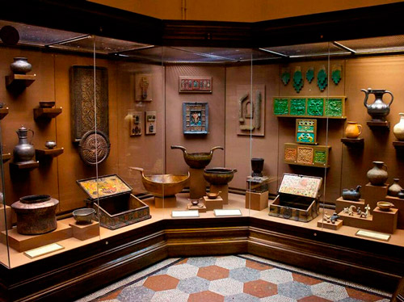
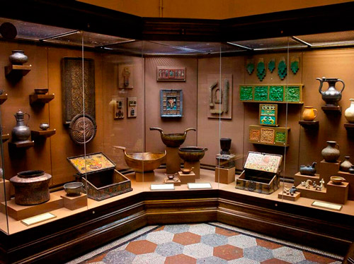

Что мы предлагаем?
Наша главная цель - рассказать о Москве так, чтобы это было интересно всем!
Необычные маршруты
Мы обязательно порадуем тебя необычными маршрутами Москвы, которые прокладывают наши опытные гиды. Ты увидишь и узнаешь о Москве то, что никто не знал!
Классные сувениры
Отличная новость! У нас появился магазин сувениров! И самое примечательное, что все эти сувениры мы делаем сами! Заходи к нам в гости!
Интересные экскурсии
За время экскурсий, которых у нас больше 20, ты узнаешь и увидишь все основные достопримечательности: Кремль, Храм Христа Спасиьеля, так и пройдешься по пешеходным улицам Москвы, узнаешь их историю и сделаешь самые классные фотографии. знал!
Фотосессии в Москве
Команда MyMoscow рада провести фотосессии в любом уголке Москвы. Не важно, свадьба у Вас или просто захотелось добавить в альбом или инстаграм красивых фоток./p>
Новые знакомства
MyMoscow - это целый клуб, где после московских прогулок ты сможешь продолжить общение с теми, кому интересна Москва, знакомиться с новыми людьми и делиться впечатлениями.
Яркие впечатления
Самое важное - это яркие эмоции, которые остануться с тобой на долгое время! Поэтому в нашей команде мы ждем именно тебя!
Кто мы такие
Мы - команда тех, кто любит историю и любит Москву.
Москва - это не только место по "заколачиванию денег" и "взращиванию карьеры", а еще и бесконечно красивые памятники природы, парки, заповедники. Активный отдых в Москве и Подмосковье - это отличная возможность вырваться из душного мегаполиса куда-нибудь в "дебри", навстречу приключениям. К счастью, не все Подмосковье еще "облагорожено" асфальтными дорожками и высоченными коттеджными заборами. Еще встречаются места, настолько глухие и далекие, что, очутившись там, кажется, что ты - первый человек, ступивший на эту землю.
Там, где не проедет автомобилист и даже велосипедист, найдет эту лазейку и откроет для себя красоты 100% бездорожья турист, проводящий свой активный отдых в Подмосковье.
Москва в фотографиях
Проще всего рассказать обо всем в фотографиях. Смотрите наши фотоотчеты и присылайте нам свои фотографии.


 



Отзывы
Были с дочкой и подругой на ночной экскурсии. Все таки как много зависит от экскурсовода! Мы все четыре часа ходили за Станиславом Симоновым, как кролики. Боялись пропустить хоть одно слово. При этом моей дочке - которая побывала во многих местах т с детства искушенная на интересные события - была сильно увлечена.

Екатерина Васильевна
Ездили на экскурсию с семиклассниками и родителями. Всем очень понравилось! Экскурсовод Михаил Борисович очень интересно, необычно и с юмром рассказывал о Москве 16 века. Гибко подстраивал экскурсию под интересы и потребности слушателей, ловко "управлял" подачей автобуса, не давая нам замерзнуть.) Огромное

Анна Крушевская
Напишите нам